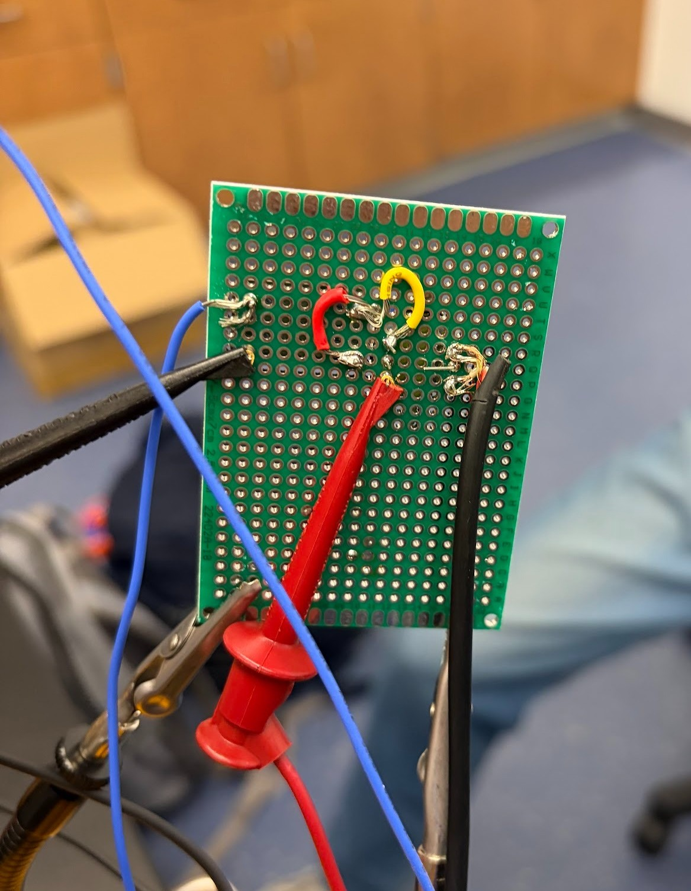
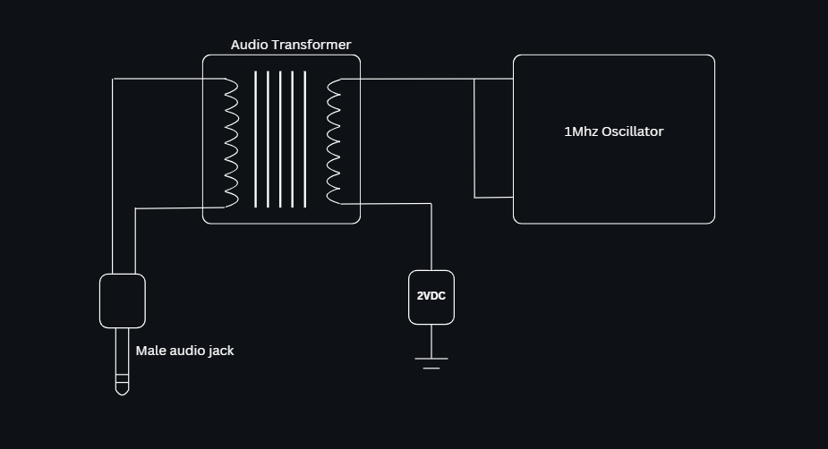

What's inside
Components & Materials
Audio Transformer
Signal modulation
1MHz Crystal Oscillator
Carrier frequency
Perforated Board
PCB substrate
Solder & Wire
Assembly
What it looks like
Photos


The pictures above show the 2 components soldered and connected via wires on a perforated board. On the left of the first picture is the audio transformer, and on the right is the crystal oscillator.
Circuit
Schematic

Outcomes
Results
1MHz
Carrier frequency
AM
Modulation type
2
Components used
Successfully transmitted an AM signal at 1MHz using only a crystal oscillator and audio transformer soldered onto a perforated board. The simplicity of the circuit demonstrated how carrier wave generation and audio modulation can be achieved with minimal components.